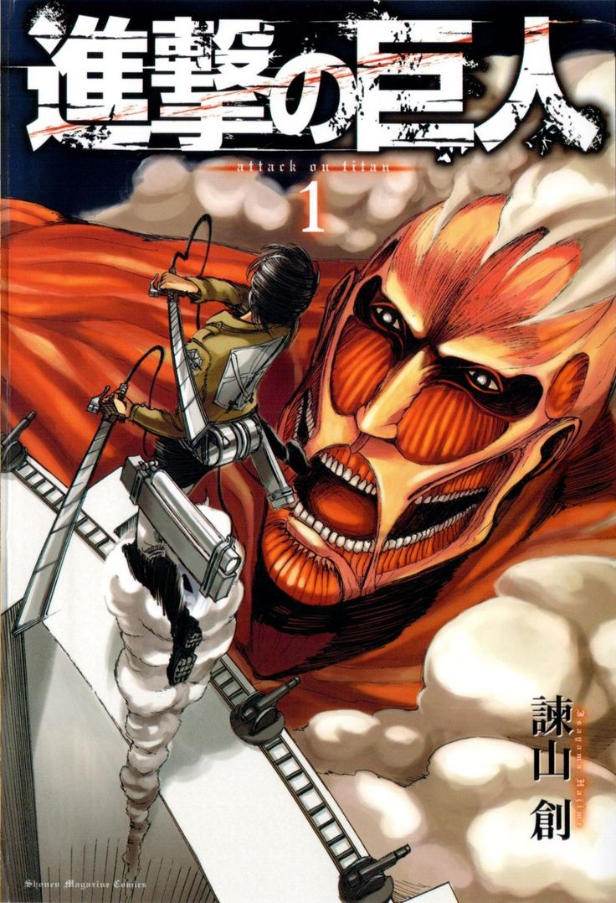

Атака титанов
О манге
«Атака титанов» (яп. 進撃の巨人) — манга, созданная Хадзимэ Исаямой. Публиковалась с 9 сентября 2009 года по 9 апреля 2021 года в журнале Bessatsu Shōnen Magazine издательства Kodansha, собрана в 34 тома. Аниме-адаптация от Wit Studio и MAPPA транслировалась с 2013 года. Действие происходит в мире, где человечество живёт за стенами, защищающими от гигантских титанов. Эрен Йегер и его друзья вступают в разведкорпус, чтобы раскрыть тайны титанов.
Автор: Хадзимэ Исаяма — мангака, известный мрачным стилем и сложными сюжетами.
Дата выпуска: 9 сентября 2009 (манга), 7 апреля 2013 (аниме).
Ключевые персонажи

Эрен Йегер
Главный герой, член разведкорпуса. Обладает силой титана и стремится уничтожить всех титанов.
Микаса Акерман
Приёмная сестра Эрена, мастер боя. Защищает Эрена любой ценой.
Армин Арлерт
Друг Эрена, стратег разведкорпуса. Обладает острым умом и позже наследует титана-колосса.
Леви Акерман
Капитан разведкорпуса, сильнейший солдат человечества. Мастер боя и лидер.